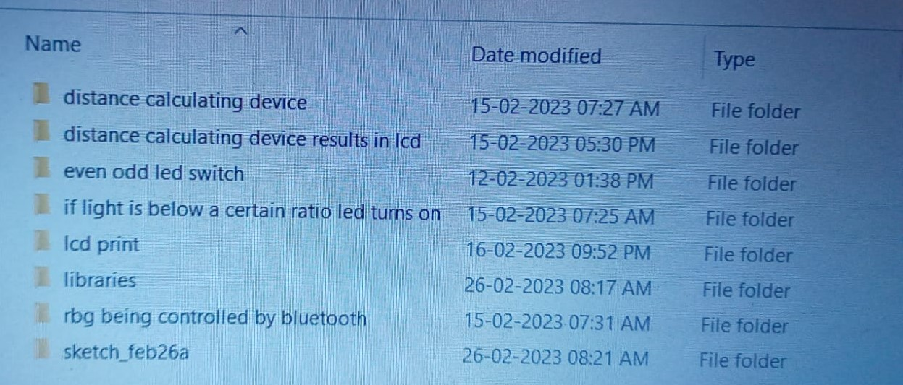

The first few days were not that special.Then came a unexpected twist "The Maths Paper" yep it was disaster.So, what happened was i knew the answer to all the questions but then did not know how to write steps for a question and was trying to find that question's answer for literal 30 min .Yep you saw that correct "30Min". So i had exactly 30 min left to solve around solve remaining paper of 25 marks .And i did'nt realise that my one five marks question went wrong .What i did was switched the rate of compound interest with simple interest rates.I did'nt realise that i made that mistake until later while discussing the paper with peers .Then they said that i would not even able to score above 30 marks .Did i get more than? Even i don't know .The marks will be found later in the blog .Yeah that maths paper came unexpected.After that i think around on wednesday ot the same week ma'am announced the science exhibition intially ma'am choose around 8 students for it .Then on next day it was decided that every students were needed to be participated .So i decided to make a group of me and my 3 friends(Swarit,Prassanna,Shyam Churan)then ma'am said that "The Boys" and girls should be included. So i and churan decided to go 50% boys and 50% girls . So i searched for some who had experience while churan was searching for 1 as well . We ended up with the following(Churan,Arya,Pratika,Myself). We decided to discuss about exhibition after the exam ends .
23Jan to 31Jan 2023(Science exhibition and marks revealed)
Ohh dude was i wrong we should have discussed science exhibition .On 23 Jan after paper we started assembly practise at that time i got to know that the exhibition has trial on 27th of Jan .So we needed to plan the exhibition out. I started to plan it out . We had internal fights inside our group not few , many but we were eventually agreeing to one solution.The same day math's marks were revealed ,umm i actually got more than 30 indeed i got 42 marks.Then we had back to back zoom meetings discussing on topics .Then there was an assembly oraganised by the school and i really wanted to go but i did'nt have any transportation method . I was so tempted to go but knew i could'nt.Then on 26th jan we met to build the project . We spent more time talking and enjoying rather than building the project.But it was really fun , i enjoyed it so much .Then came the day of trial run .Well it was nothing special .on 28th jan and 29th jan we added the sensor and created the script. Now comes the day when we had to present our model to the judge .Now when the judge came to us we presented it . But we decided to not go according to the script .The judge really liked the explaination she had no doubts ,then she saw the nam of the team"Super Sonics"(suggested by me).Now we had to wait for the results.On next day 31st Jan (my birthday)also assembly which is why i got trolled heavily of because of someone . In second period we got to know we were selected for second level.But then got hurt because of that same person did'nt wish me really it hurt me so much .But let it be some people just don't care .
My marks:
Maths:42
Science:48
English:45(2nd top in whole 8th)
ICT:23
Whole of feb
Won't be specifying that much .But in short, this month was full of every emotion.The second round went well. 1-13 Feb was quite boring. After that it was quite fun .I got confrimmed that one person knows some thing. Most of you probably know who someone is referring.
MY arduino projects during this blog's period(you could ask for circuit diagram and code if you want)

Wear a headhone ans listen to these now